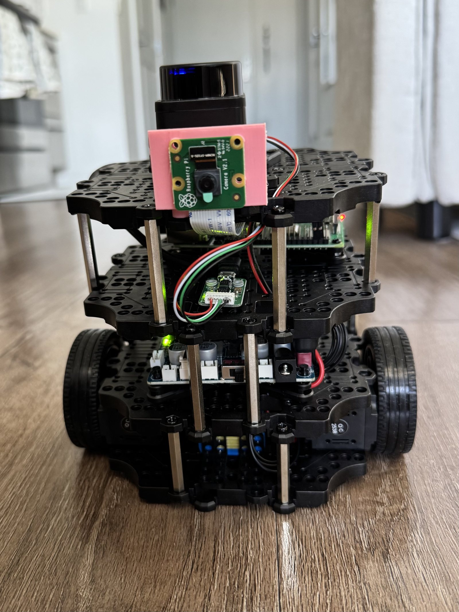

Sensor reliability in autonomous robot navigation
Research question How do sensor-based navigation systems in autonomous robots respond to manipulated or incorrect sensor input — and how can we make them more reliable?

This research investigates how sensor-based navigation systems in autonomous robots respond to manipulated, delayed, noisy, or otherwise incorrect sensor input. Using a TurtleBot3 Burger, the project evaluates how unreliable LiDAR, camera, IMU, and related sensor data affect mapping, localization, obstacle avoidance, and navigation.
The research compares normal and manipulated conditions, measures navigation performance, and explores methods such as filtering, sensor redundancy, and validation checks to improve reliability — toward safer assistive robotics.
Technologies & equipment
- TurtleBot3 Burger
- ROS 2
- Ubuntu
- LiDAR
- Camera
- IMU
- Raspberry Pi
- OpenCR
- OPAL-RT
- Python
- Navigation & mapping tools
Posters, demonstrations, and build videos will be logged here as the mission progresses.